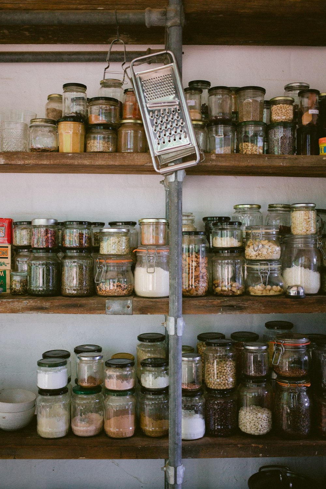

How to save all your Chrome tabs before you restart
Short answer
Before you restart, open Chrome's Settings → On startup and choose Continue where you left off, so Chrome reopens your windows when it starts. For a copy that survives anything, press Ctrl+Shift+D (⌘+Shift+D on a Mac) in each window to bookmark all its tabs into a folder. Then quit Chrome yourself from its menu before the computer restarts.

Three minutes before you restart
A restart for a system update, a new driver or a computer that's gone slow is the moment tabs most often go missing. Chrome can bring them back on its own, but only if it's set up to, and only if it closes cleanly. These steps cover both, plus a copy that doesn't depend on Chrome at all.
- Turn on Continue where you left off. Open the ⋮ menu → Settings → On startup and choose Continue where you left off. From now on Chrome reopens the windows you had whenever it starts.
- Bookmark every window. In each window, press Ctrl+Shift+D (⌘+Shift+D on a Mac). Chrome puts all the window's tabs into one new folder. The shortcut covers one window at a time, so repeat it in each, and name each folder after what's in it.
- Close Incognito windows on purpose. Chrome never keeps Incognito tabs. Copy any address you need from them first.
- Quit Chrome yourself. Use the ⋮ menu → Exit on Windows, or Chrome → Quit Google Chrome on a Mac, before you restart. Chrome closes normally and keeps a clean record of your windows, rather than being stopped halfway by the restart.
- Restart, then open Chrome. Your windows should be back. If not, press Ctrl+Shift+T (⌘+Shift+T) once in the new window, or open the bookmark folders you made.
Restarting only Chrome
If it's Chrome that needs the restart, for an update or because it's slow, you don't have to close anything by hand. When an update is waiting, use Chrome's own Relaunch button in the ⋮ menu: it reopens your windows as they were. You can also type chrome://restart in the address bar and press Enter.
If the tabs don't come back
Don't close and reopen Chrome again: each restart replaces its record of the last session. Work through what to try when Chrome loses your tabs after a restart, in order. If you saved a list of links somewhere, paste it into Open many links at once to open them all in tabs; the tool runs in the page and sends nothing anywhere.
Keep what you aren't using somewhere a restart can't reach
Continue where you left off protects the windows you have open, as long as Chrome closed well. A bookmark folder per window protects the pages, in one heap per window. Neither keeps what the tabs were for: the trip, the bug and the camera you're choosing end up in the same folder.
Simmer sorts your open tabs into the things you're in the middle of. Before a restart, put the tasks you aren't working on onto the back burner: each task's tabs are saved first, in Chrome's storage on your computer and in your bookmarks if you choose, then they close. A task on the back burner doesn't depend on the session, so a restart doesn't touch it, and Bring back reopens it whole, in its group. You can also turn on automatic backups, which write a file to Downloads/Simmer.
To be plain about it: Simmer doesn't take snapshots of every open window, and it doesn't sync to other computers. The windows you still have open are covered by Chrome's setting above. Nothing happens before you press Start, and everything Simmer does is listed under Recently with Undo.
Questions
- Will I lose my Chrome tabs if I restart my computer?
- Not if Chrome is set to Continue where you left off and closes normally. Set it in Settings → On startup, and quit Chrome from its menu before you restart. Incognito tabs are never kept.
- How do I save all open tabs in Chrome at once?
- Press Ctrl+Shift+D (⌘+Shift+D on a Mac). Chrome bookmarks every tab in the current window into one new folder. Do it once in each window.
- How do I restart Chrome without losing my tabs?
- Use the Relaunch button Chrome shows in the ⋮ menu when an update is waiting, or type chrome://restart in the address bar. Both reopen your windows.
- Do tabs I put away in Simmer survive a restart?
- Yes. Tasks on the back burner are saved in Chrome's storage on your computer, and in your bookmarks if you choose, so they're still there after a restart. Simmer doesn't snapshot the windows you still have open.